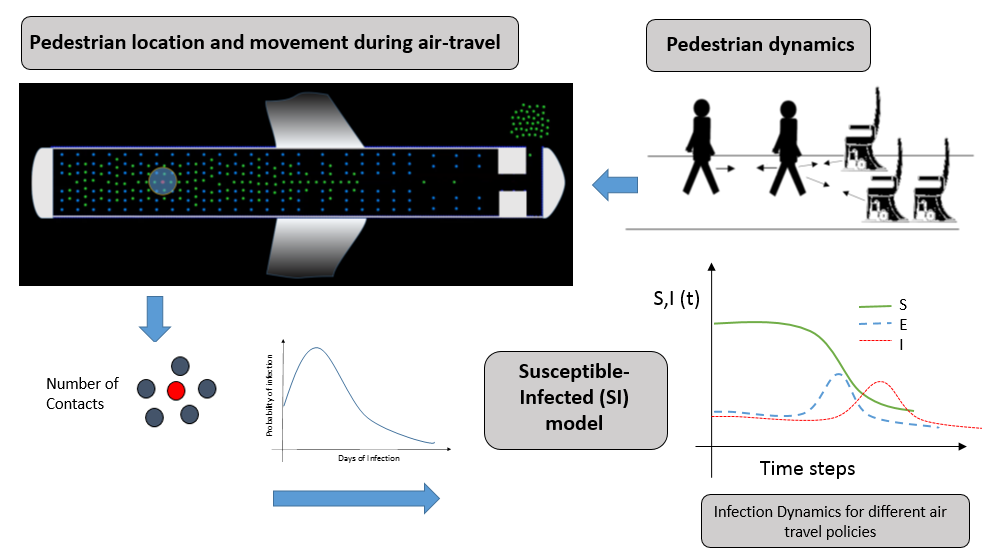

OUR RESEARCH
At Advanced Materials and Mechanics Group our research is at the intersection of mechanics and materials science. We study the structure-processing-property correlation in advanced materials like aerospace composites and nanomaterials using experimental mechanics methods and computational approaches like finite element, lattice beam models and Molecular Dynamics Simulations. Another focus area is modeling of active particles (e.g. pedestrians, bacteria etc). We adapt molecular dynamics based approaches to pedestrian movement and apply it to evaluate movement and contacts among passengers during air travel. This has applications in formulating air-travel related policies for minimizing infection transmission. We are a part of a multi-university Project VIPRA (Viral Infection Propagation through Air-travel) which studies infection modeling using pedestrain movement, phylogeography and parallel computing. Our group is housed in both Composites Laboratory and Structures Laboratory in Lehman Building and uses experimental capabilities of both labs as well as computational facilities of our in-house cluster Rigel and external computing clusters like National Center for Supercomputing Applications (NCSA) Bluewaters supercomputer. Dr Namilae's research has been funded by NSF, NASA, DOT and internally by Embry-Riddle. Our work has been featured in media including Economist, NSF media website etc.

Piezoresistive Nanocomposites
Development and testing of nanocomposites for strain and space debris sensing applications
Funding: NASA SBIR
Aerospace Composites
Manufacturing defects and bonded patch repair of aerospace structures
Funding: ERAU FIRST
Mesoscale Microstructure Modeling
Monte Carlo models of hybrid networks to optimize microstructures for synergy between fillers of different shapes
Funding: NASA SBIR
Molecular Dynamics Based Pedestrian Dynamics
Modeling the Pedestrian movement in crowded areas like airports based on concepts of molecular dynamics and social force models. Emergency planning and multiscaling with larger scale transportation models.
Funding: DOT UTC

Multiscale Pedestrian-Infection Dynamics Models
Combining Pedestrian movement with stochastic infection transmission models for studying disease spread during air travel.
Funding: NSF
Dr. Sirish Namilae
-
Dr. Sirish Namilae joined Aerospace engineering department in 2014 after a six year career at Boeing. He earned a master’s degree in materials science from Indian Institute of Science and a PhD in mechanical engineering from Florida State University. Subsequently, he was a postdoctoral fellow at Oak Ridge National Laboratory. At Boeing he worked in airframe structure analysis in several programs like 787-8 & 9, 777-9X, rotorcraft programs and in product development. He was the structures focal for main landing gear doors in multiple aircrafts and also served as Associate Editor (Structures) for the company’s internal journal, Boeing Technical Journal. He also taught undergraduate engineering courses at Drexel University as an adjunct faculty. He has published over 30 well-cited journal and conference papers. Dr. Namilae’s specialization is in the areas of solid mechanics and materials science. His current research interests are in computational modeling of active particles, aerospace composites and nanocomposites. On a personal note he is a cycling enthusiast training for his first century ride
-
Wu Yuxuan finished his Master of science in Aerospace Engineering and joined the PhD program in Spring 2021.
Deepak Gujjar joined the PhD program in Fall 2021.
Evan Medora finished his Master of science in Aerospace Engineering and joined the PhD program in Fall 2023.
Palvi Garg joined the PhD program in Fall 2023.
Reshma Kubsad joined her Master of science in Aerospace Engineering in Fall 2023.
Pragathi Agraharam joined her Master of science in Aerospace Engineering in Spring 2023.
Alexander Skoppe joined her Master of science in Aerospace Engineering in Spring 2023.
James Joseph joined her Master of science in Aerospace Engineering in Fall 2022.
Graduated Students
-
Samarth Motagi finished his PhD program in Aerospace Engineering in Fall 2023. He has applied a self-exciting point process model for two engineering applications: (a) To identify secondary crashes from a given traffic data and (b) To quantify the agglomeration state and size of nanoparticles from computationally and experimentally generated nanoparticle microstructures.
Sriraj Srihari finished his Master of science in Aerospace Engineering in Fall 2023.
Audrey Gbaguidi finished his PhD program in Aerospace Engineering in Spring 2021. He developed nanocomposite sensor to detect MMOD impact damage on inflatable habitat. He also developed a stochastic percolation model that was used to investigate the effects of electrical conductivity and resistance of carbon nanotube and graphene microstructures.
Pierrot Derjany finished his PhD program in Aerospace Engineering in Fall 2020. He combined the principles of molecular dynamics, pedestrian movement and epidemic modeling to suggest alternative practices in airports during a viral outbreak.
Sandeep Chava finished his finished his PhD program in Aerospace Engineering in Fall 2021. He developed a new in-situ experimental approaches, cure cycle design, interface modification, and thermomechanical modeling for a fundamental understanding of the cure kinetics during composite manufacturing.
Nengda Jiang finished his Master of Science in Aerospace Engineering and specialized in flexible nanocomposite sensors.
Software and Codes
-
- Analyzing the Role of Air Transportation in COVID 19 Pandemic Disaster ! Link Despite commercial airlines mandating masks, there have been multiple documented events of COVID-19 superspreading on flights. Conventional models do not adequately explain superspreading patterns on flights, with infection spread wider than expected from proximity based on passenger seating. An important reason for this is that models typically do not consider the movement of passengers during the flight, boarding, or deplaning. Understanding the risks for each of these aspects could provide insight into effective mitigation measures.
- Multiscale Model for Hurricane Evacuation and Fuel Shortage ! Link High-volume evacuations, disruptions to the supply chain, and fuel hoarding from non-evacuees have led to localized fuel shortages lasting several days during recent hurricanes. While news reports mention fuel shortages in past hurricanes, the crowdsource platform Gasbuddy has quantified the fuel shortages in the recent hurricanes. The analysis of this fuel shortage data suggested fuel shortages exhibited characteristics of an epidemic. Here, a Susceptible- Infected-Recovered (SIR) epidemic model is developed to study the evolution of fuel shortage during a hurricane evacuation. Additionally, we apply optimal control theory to identify an effective intervention strategy. The study found a linear correlation between traffic demand during the evacuation of Hurricane Irma and the resulting fuel shortage data. This correlation is used in conjunction with the Statewide Regional Evacuation Study Program (SRESP) surveys to estimate the evacuation traffic and fuel shortages for potential hurricanes affecting south Florida. Results indicate that evacuation of Miami-Dade County in the event of a Category-3 hurricane landfall in the region, could lead to fuel shortages in up to 90% of the local refuelling stations. The model indicates that this reduces to 28% by providing relief to 75% of the gas stations during the first two days of the evacuation.
- Identification of Secondary Crashes using Temporal Point Process Model ! Link Secondary crashes or crashes that occur in the wake of a preceding or primary crash are among the most critical incidents occurring on highways, due to the exceptional danger they present to the first responders and victims of the primary crash. In this work, we developed a self-exciting temporal point process to analyze crash events data and classify it into primary and secondary crashes. Our model uses a self-exciting function to describe secondary crashes while primary crashes are modeled using a background rate function. We fit the model to crash incidents data from the Florida Department of Transportation, on Interstate-4 (I-4) highway for the years 2015-2017, to determine the model parameters. These are used to estimate the probability that a given crash is secondary crash and to find queue times. To represent the periodically varying traffic levels and crash incidents, we model the background rate, as a stationary function, a sinusoidal non-stationary function, and a piecewise non-stationary function. We show that the sinusoidal non-stationary background rate fits the traffic data better and replicates the daily and weekly peaks in crash events due to traffic rush hours. Secondary crashes are found to account for up to 15.09% of traffic incidents, depending on the city on the I-4 Highway.
News
-
- 2023 - AIAA Associate Fellow ! Link
- 2022 - Abbas Sivjee Researcher of the year, ERAU
- 2021 - Outstanding Researcher of the Year - College of Engineering, ERAU
- Dec 2017: Watch Dr.Namilae in Channel 9 news ! Link
- Dec 2017: Congratulations Pierrot Derjany on successfully completing PhD preliminary !!
- Aug 2017: Congratulations Audrey Gbaguidi on successfully completing PhD preliminary !!
- Aug 2017: Our work on infection transmission in airplanes is featured in several international newspapers and websites including Economic Times, Deccan Chronicle and Hindustan Times!!
- Aug 2017: Congratulations Sandeep Chava for joining the team as a new PhD student starting this Fall 2017. Welcome back Sandeep!
- Aug 2017: Audrey Gbaguidi's first journal paper appeared in ASME JEMT. Congratulations !
- July 2017: Congratulations Pierrot Derjany for publishing his first journal paper in Phys Rev E!
Publications
-
Journal Papers
- S Motagi and S Namilae, Point-Process Modeling of Secondary Crashes, PLoS one Journal (2023)
- D Kumar, Y Liu, H Song and S Namilae, Explainable deep neural network for in-plain defect detection during additive manufacturing, Rapid Prototyping Journal (2023)
- D Kumar, M Dusabimana, M Al-Haik and S Namilae, Effect of nanoscale interface modification on residual stress evolution during composite processing, Journal of Composite Materials, 00219983231179522 (2023)
- S Chava and S Namilae, Process Modeling for Strain Evolution during Autoclave Composite Cure, Applied Composite Materials, 30(2), 361-377 (2023)
- S Namilae, Y Wu, A Mubayi, A Srinivasan, and M Scotch, Reply to comments on “Identifying mitigation strategies for COVID-19 superspreading on flights using models that account for passenger movement”, Travel Medicine and Infectious Disease, 51, 102453 (2023)
- S Chava, S Namilae, and M Al-Haik, Residual stress reduction during composite manufacturing through cure modification: In situ analysis, Journal of Composite Materials, 56(6), 975-988 (2022)
- A Gbaguidi, S Namilae and D Kim, Microstructural Design of Graphene Nanocomposites for Improved Electrical Conductivity, Journal of Engineering Materials and Technology, 143(4), 041008 (2021)
- Y Wu, S Namilae, A Mubayi, M Scotch and A Srinivasan, Computational modeling of on-flight COVID-19 spread incorporating pedestrian movement, Journal of Transport & Health, 22, 101172 (2021)
- S Motagi, and S Namilae, In-situ investigation of resin shrinkage in the composite manufacturing environment, Applied Composite Materials, 28, 651-657 (2021)
- S Chava, and S Namilae, In situ investigation of the kinematics of ply interfaces during composite manufacturing, Journal of Manufacturing Science and Engineering, 143(2), 021006 (2021)
- A Gbaguidi, F Madiyar, D Kim, and S Namilae, Multifunctional inkjet printed sensors for MMOD impact detection, Smart Materials and Structures, 29(8), 085052 (2020)
- P Derjany, S Namilae, D Liu and A Srinivasan, Multiscale model for the optimal design of pedestrian queues to mitigate infectious disease spread, PLoS one, 15(7), e0235891 (2020)
- A Gbaguidi, S Namilae, and D Kim, Synergy effect in hybrid nanocomposites based on carbon nanotubes and graphene nanoplatelets, Nanotechnology, 31(25), 255704 (2020)
- N Jiang, S Namilae and V Unnikrishnan, Silicone/carbon nanotube sheet biofidelic piezoresistive sandwich composites, Journal of Engineering Materials and Technology, 142(1), 011009 (2020)
- S Namilae, J Li and S Chava, Improved piezoresistivity and damage detection application of hybrid carbon nanotube sheet-graphite platelet nanocomposites, Mechanics of Advanced Materials and Structures, 26(15), 1333-1341 (2019)
- A Gbaguidi, S Namilae, and D Kim, Stochastic percolation model for the effect of nanotube agglomeration on the conductivity and piezoresistivity of hybrid nanocomposites, Computational Materials Science, 166, 9-19 (2019)
- S Namilae and S Choudhary, Piezoresistive nanocomposites for sensing the effectiveness of composite patch repair, Composites Communications, 10, 41-44 (2018)
- S Namilae, A Mubayi, A Srinivasan, and P Derjany, Model based policy analysis for infection spread during air transportation, Journal of Transport & Health, 9, S12 (2018)
- A Gbagaudi, S Namilae and D Kim, Monte Carlo Model for Piezoresistivity of Hybrid Nanocomposites, ASME Journal of Engineering Materials and technology, 140 (2017)
- S. Namilae, P Derjany, A Mubayi, M Scotch and A Srinivasan, Multiscale Model For Infection Dynamics During Air Travel, Physical review E, 002300 (2017)
- S. Namilae, A Srinivasan, A Mubayi, M Scotch and R Pahle, Self-propelled pedestrian dynamics model: Application to passenger movement and infection propagation in airplanes, Physica A 465 (2017) 248–260
- S. Namilae, A Srinivasan, A Mubayi, M Scotch and R Pahle, Self-Propelled Pedestrian Dynamics Model for Studying Infectious Disease Propagation during Air-Travel, Journal of Transport & Health (2016) 3 (2), S40
- S Namilae, J Li, and S Chava, Improved piezoresistivity and damage detection application of hybrid carbon nanotube sheet-graphite platelet nanocomposites. Mechanics of Advanced Materials and Structures, 26(15), 1333-1341 (2019)
- S. Namilae and P. Minguet, Study of fracture process zone characteristics using cohesive zone models, Boeing Technical Journal (2013)
- S. Namilae, B Radhakrishnan, JR Morris, Atomistic simulation of the effect of Ga on crack tip opening in Al bicrystals, Modeling and Simulation in Materials Science and Engineering, 16, 0750011, (2008)
- S. Namilae, DM Nicholson, PKVV Nukala, CY Gao, YN Osetsky and DJ Keffer, Absorbing boundary conditions for molecular dynamics and multiscale modeling, Physical Review B 76, 144111 (2007)
- S. Namilae, M. Fuentes-Cabrera, B Radhakrishnan, GB Sharma and DM Nicholson, Energetics of hydrogen storage in organolithium nanostructures, Chemical Physics Letters, 436, 150, (2007)
- S. Namilae, B Radhakrishnan and GB Sharma, Atomic simulations of interfacial sliding in amorphous carbon nano-composites, Composites Science and Technology, 67, 1302, (2007)
- S. Namilae, U. Chandra, A. Srinivasan and N. Chandra, Study of interfacial behavior of carbon nanotube reinforced composites using parallel molecular dynamics simulations, Computer Modeling in Engineering and Sciences, (2007)
- S. Namilae and N. Chandra, Role of atomic scale interfaces in the compressive behavior of carbon nanotube based composites, Composite Science and Technology, 66, 2030, (2006)
- G.A. Shen, S. Namilae, and N. Chandra, Load transfer issues in tensile and compressive behavior of multiwall carbon nanotubes, Materials Science and Engineering A, 429, 66, (2006) (Featured among top 25 downloaded articles in the journal, 2006)
- S Namilae and N Chandra, Multiscale model to study the effect of interfaces in carbon nanotube based composites, ASME Journal of Engineering Materials and Technology, 127, 222, (2005). (Featured among top 10 downloaded articles in the journal, 2006, 2007 & 2008)
- S Namilae, N Chandra and C Shet, Mechanical Behavior of Functionalized Nanotubes, Chemical Physics Letters, 387, 247, (2004)
- N Chandra, S Namilae and C Shet, Local Elastic Properties of Carbon nanotubes in Presence of Stone-Walls Defects, Physical Review B, 69, 094101, (2004)
- N Chandra and S Namilae, Tensile and compressive behavior of carbon nanotubes: Effect of functionalization and topological defects, Mechanics of Advanced Materials and Structures, 13, 115 (2006)
- C Shet, N Chandra and S Namilae, Defect-defect interaction in carbon nanotubes under mechanical loading, Mechanics of Advanced Materials and Structures 12, 55, (2005)
- C Shet, N Chandra and S Namilae, Defect annihilations in carbon nanotubes under thermomechanical loading, Journal of Materials Science. 40, 27, (2005)
- J Kohle, U Chandra, S Namilae, A Srinivasan and N Chandra, Parallel simulation of Carbon Nanotube based composites, Lecture Notes in Computer Science, 3296, 211 (2004)
- N Chandra and S Namilae, Multi-Scale Modeling of Nanocrystalline Materials Material Science Forum, 427-429, 273 (2003)
- S Namilae, N Chandra and T G Nieh, Atomistic simulation of grain boundary sliding in pure and magnesium doped aluminum bicrystals, Scripta Materialia, 46, 49, (2002)
- S Namilae, N Chandra and T G Nieh, Atomistic simulation of effect of trace elements on grain boundaries of aluminum, Material Science Forum, 357-359, 387, (2001)
- S Namilae N Chandra and T G Neih, Atomistic Simulation of Effect of Trace Elements on Grain Boundaries of Aluminum, International conference of superplasticity in Advanced Materials (August 2000)
- S Motagi and S Namilae, Point-Process Modeling of Secondary Crashes, PLoS one Journal (2023)
Research Facilities
-
Dr. Sirish Namilae joined Aerospace engineering department in 2014 after a six year career at Boeing. He earned a master’s degree in materials science from Indian Institute of Science and a PhD in mechanical engineering from Florida State University. Subsequently, he was a postdoctoral fellow at Oak Ridge National Laboratory. At Boeing he worked in airframe structure analysis in several programs like 787-8 & 9, 777-9X, rotorcraft programs and in product development. He was the structures focal for main landing gear doors in multiple aircrafts and also served as Associate Editor (Structures) for the company’s internal journal, Boeing Technical Journal. He also taught undergraduate engineering courses at Drexel University as an adjunct faculty. He has published over 30 well-cited journal and conference papers. Dr. Namilae’s specialization is in the areas of solid mechanics and materials science. His current research interests are in computational modeling of active particles, aerospace composites and nanocomposites. On a personal note he is a cycling enthusiast training for his first century ride
Contact
Contact Us
Our Address
Aerospace Engineering Department 600S Clyde Morris Blvd, Daytona Beach, FL - 32114
Email Us
namilaes@erau.edu
Call Us
+1 386 226 6445